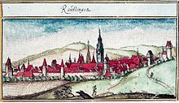

<meta charset="utf-8">
<title>w4u-main demo</title>
<script src="https://unpkg.com/vue"></script>
<!--script src="https://cdnjs.cloudflare.com/ajax/libs/webcomponentsjs/1.2.0/webcomponents-loader.js"></script-->
<script src="../web-components/c4u-main/sync/c4u-main.js"></script>
<script src="../web-components/w4u-main/sync/w4u-main.js"></script>
<script src="../web-components/w4u-test/sync/w4u-test.js"></script>
<link rel="stylesheet" href="https://cdnjs.cloudflare.com/ajax/libs/font-awesome/4.7.0/css/font-awesome.min.css">


<c4u-circuitry>

  <w4u-slider name="slider1" orient="horizontal" color="#0000FF"  continuous="false" min=0.0 max=1.0></w4u-slider>

  <w4u-map name='map1' latitude='0.53' longitude='0.04'>
    <w4u-cluster name='cluster1'>
      <w4u-marker name='marker1' latitude='0.52' longitude='0.03' icon='fa-coffee' />
      <w4u-marker name='marker2' latitude='0.52' longitude='0.05' tooltip='HaHa'><p>ha<i class='fa fa-glass'></i>ha</p></w4u-marker>
      <w4u-marker name='marker3' latitude='0.54' longitude='0.03' icon='fa-sun-o'></w4u-marker>
      <w4u-marker name='marker4' latitude='0.54' longitude='0.05' number='Rt' tooltip='Reutlingen'>
         <h4>Reutlingen</h4>
         </img><br/>
         <a href='https://de.wikipedia.org/wiki/Reutlingen'>siehe Wikipedia</a>
      </w4u-marker>
    </w4u-cluster>
  </w4u-map>
 
<w4u-visibility name="vis1" mode="display">
 <h3>Burgund</h3> 
 <p>Das Burgund (französisch Bourgogne [buʀˈgɔɲ]) ist eine Landschaft im Zentrum Frankreichs. Von 1956 bis 2015 war es eine eigenständige Region, bestehend aus den Départements Côte-d’Or, Nièvre, Saône-et-Loire und Yonne. Sie hatte eine Fläche von 31.582 km² und 1.632.887 Einwohner (Stand 1. Januar 2017). Hauptstadt war Dijon. Die Region Burgund fusionierte mit der Region Franche-Comté zu Bourgogne-Franche-Comté. </p>
<a href='https://de.wikipedia.org/wiki/Burgund'>siehe Wikipedia</a>
</w4u-visibility>

<w4u-visibility name="vis2" mode="display">
 <h3>Schweiz</h3>
 <p>Die Schweiz (französisch Suisse [sɥis(ə)], italienisch Svizzera [ˈzvitːsera], rätoromanisch Audio-Datei / Hörbeispiel Svizra?/i [ˈʒviːtsrɐ] oder [ˈʒviːtsʁɐ], lateinisch Helvetia), amtlich Schweizerische Eidgenossenschaft (französisch Confédération suisse, italienisch Confederazione Svizzera, rätoromanisch Audio-Datei / Hörbeispiel Confederaziun svizra?/i, lateinisch Confoederatio Helvetica), ist ein föderalistischer, demokratischer Staat in Mitteleuropa. Er grenzt im Norden an Deutschland, im Osten an Österreich und Liechtenstein, im Süden an Italien und im Westen an Frankreich. 
</p> 
<a href='https://de.wikipedia.org/wiki/Schweiz'>siehe Wikipedia</a>
</w4u-visibility>

<w4u-visibility name="vis3" mode="display">
 <h3>Ornain</h3> 
 <p>Der Ornain ist ein Fluss in Frankreich, der in der Region Grand Est verläuft. Er entspringt unter dem Namen Maldite im Gemeindegebiet von Grand, entwässert anfangs in nordwestlicher Richtung, schwenkt bei Revigny-sur-Ornain aber auf Südwest und mündet nach 116[3] Kilometern bei Étrepy als rechter Nebenfluss in die Saulx. Auf seinem Weg durchquert der Ornain die Départements Vosges, Meuse und Marne. Zwischen Houdelaincourt und der Mündung verläuft parallel zum Fluss der Canal de la Marne au Rhin, bzw. sein Stichkanal nach Houdelaincourt. Der Fluss wird für die Wasserversorgung des Kanals herangezogen. </p> 
<a href='https://de.wikipedia.org/wiki/Ornain'>siehe Wikipedia</a>
</w4u-visibility>

<w4u-visibility name="vis4" mode="display">
 <h3>Schwaben</h3>
 <p>Schwaben ist eine historische Landschaft in Südwestdeutschland, deren Bezeichnung bis heute in der Gebrauchssprache sowohl für den (Kultur-)Raum als auch für die im Gebiet lebende, überwiegend Schwäbisch sprechende Bevölkerung verwendet wird. Da dieser Raum keine politische Einheit bildet, ist sein Umfang nicht exakt zu definieren. Gemeinhin werden die Gebiete zwischen dem Schwarzwald im Westen, dem Lech im Osten, dem Bodensee im Süden und dem südlichen Teil der Region Heilbronn-Franken im Norden zu Schwaben gerechnet. </p> 
<a href='https://de.wikipedia.org/wiki/Schwaben'>siehe Wikipedia</a>
</w4u-visibility>


<c4u-connection source="marker1-active" target="vis1-show"> </c4u-connection>
<c4u-connection source="marker2-active" target="vis2-show"> </c4u-connection>
<c4u-connection source="marker3-active" target="vis3-show"> </c4u-connection>
<c4u-connection source="marker4-active" target="vis4-show"> </c4u-connection>
<c4u-connection source="slider1-v" target="marker1-longitude"> </c4u-connection>

</c4u-circuitry>
